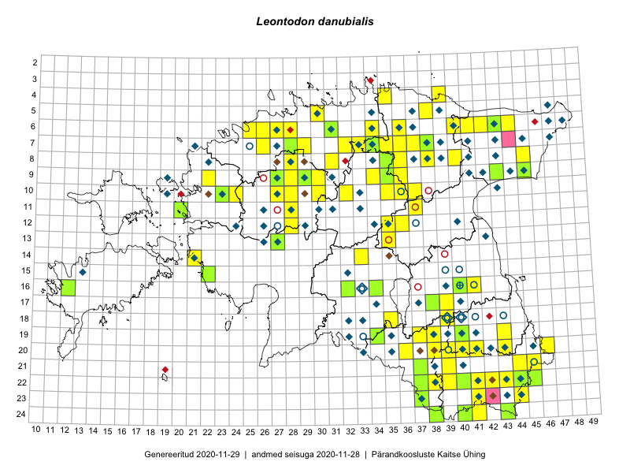

Leontodon danubialis
Uuendatud: 2016-12-02
Kaardile koondatud taksonid: Leontodon danubialis Jacq.; Leontodon hispidus subsp. danubialis (Jacq.) Simonk.

Kaart põhineb 109 kirjel, neist vaatlusi 108 ja eksemplare 1. Taksonit on leitud 65 ruudust.
Kuvatud viited 20 esimesele andmebaasikirjele, ülejäänud PlutoFis
- Tiit Hallikma, Toomas Kukk, Indrek Tammekänd: 2015-06-09: 12-28: ala
- Malle Leht: 2015-07-09: : ala
- Tiit Hallikma, Indrek Tammekänd, Toomas Kukk: 2015-06-09: 12-28: GPS punkt
- Peedu Saar, Liina Oja: 2015-06-12: 13-35: GPS punkt
- Peedu Saar, Thea Kull: 2015-06-17: 17-39: GPS punkt
- Peedu Saar, Eerik Leibak: 2015-07-30: 16-41: GPS punkt
- Ott Luuk, Peedu Saar: 2015-08-13: 24-43: ala
- Peedu Saar, Eerik Leibak: 2015-07-30: 16-41: ala
- Peedu Saar, Liina Oja: 2015-06-12: 13-35: ala
- Peedu Saar, Liina Oja: 2015-07-21: 06-44: ala
- Peedu Saar, Liina Oja: 2015-07-22: 08-45: ala
- Peedu Saar: 2015-10-01: 22-38: ala
- Thea Kull, Peedu Saar: 2015-06-17: 17-39: ala
- Toomas Kukk, Peedu Saar: 2014-09-12: 06-41: ala
- Maria Abakumova: 2015-07-07: 16-32: ala
- Mari Metsoja, Jaak-Albert Metsoja: 2015-06-10: 13-27: ala
- Meeli Mesipuu: 2015-06-29: 07-33: ala
- Karin Kikas, Elle Rajandu: 2015-06-02: 07-37: ala
- Elle Rajandu: 2015-06-02: 07-37: GPS punkt
- Kaili Orav, Silvia Pihu: 2015-06-17: 07-38: ala